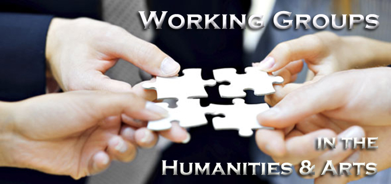

TThe Humanities Center of Wayne State University announces the
continuation of its Resident Scholars Program. The aim is to create a community of humanities and
arts faculty from different disciplines working in the same physical space at roughly the same
time.
You are here:HomeFaculty FundingResident Scholars Program

For your information
The Humanities Center announces the continuation of its program for working groups
in the arts and humanities. The purpose of the program is to bring together faculty
and advanced graduate students to explore shared scholarly or creative interests.
Groups will meet regularly to share work in progress, to read and discuss texts, and
otherwise address issues that arise in their own work or in the increasingly
interdisciplinary humanistic and creative fields. Group members must be drawn from
at least two humanities or arts departments.
To participate in this program, three or more core faculty members should submit a
proposal following the guidelines below. A typical working group would consist of
several faculty, or faculty and graduate students, organized around a topic or theme
chosen by the core members. Topics or themes could reflect any humanities or
artistic interest, but those that have an interdisciplinary scope are particularly
encouraged. Each funded working group would be expected to submit a brief year-end
report and give a public Brown Bag presentation sponsored by the Humanities
Center.
Groups of three or more Wayne State University faculty, or faculty and
advanced graduate students, in the humanities, arts, and related disciplines willing to
commit to regular meetings throughout the academic year are encouraged to submit proposals.
The Center will give favorable consideration to newly formed working groups.
Funding
In 2020-2021 the Humanities Center will fund up to five working groups
making available to each group a maximum of $800.00 for three new groups and $600.00 for two
continuing groups for photocopying, inviting speakers, and other organizational
expenses.
The Center will give preference to new working groups. The Center is
willing to assist groups in finding meeting places in the Faculty/Administration Building.
Conditions
Proposals for new working groups should consist of:
A brief (1-2 page) summary of the issues or theme the group proposes
to address, the relevance of that theme to the humanistic and/or artistic fields, and ways
in which the group intends to address that issue or theme.
The names, departmental affiliations, and contact information for
core members of the proposed group and names of potential participants.
An estimated budget, listing any planned projects and expenses.
Proposals for continuing groups should consist of a 1-2 page summary of the group's progress in
the previous year and the direction in which the group wishes to proceed; as well as items (2)
and (3) listed above. Preference will be given to proposals for new groups.
Proposals should be submitted no later than September 11, 2020 for consideration for the
2020-2021 academic year. Proposals should be sent to:
The Humanities Center announces the continuation of its program for working
groups in the arts and humanities. The purpose of the program is to bring together faculty and
advanced graduate students to explore shared scholarly or creative interests. Groups will meet
regularly to share work in progress, to read and discuss texts, and otherwise address issues
that arise in their own work or in the increasingly interdisciplinary humanistic and creative
fields. Group members must be drawn from at least two humanities or arts departments.